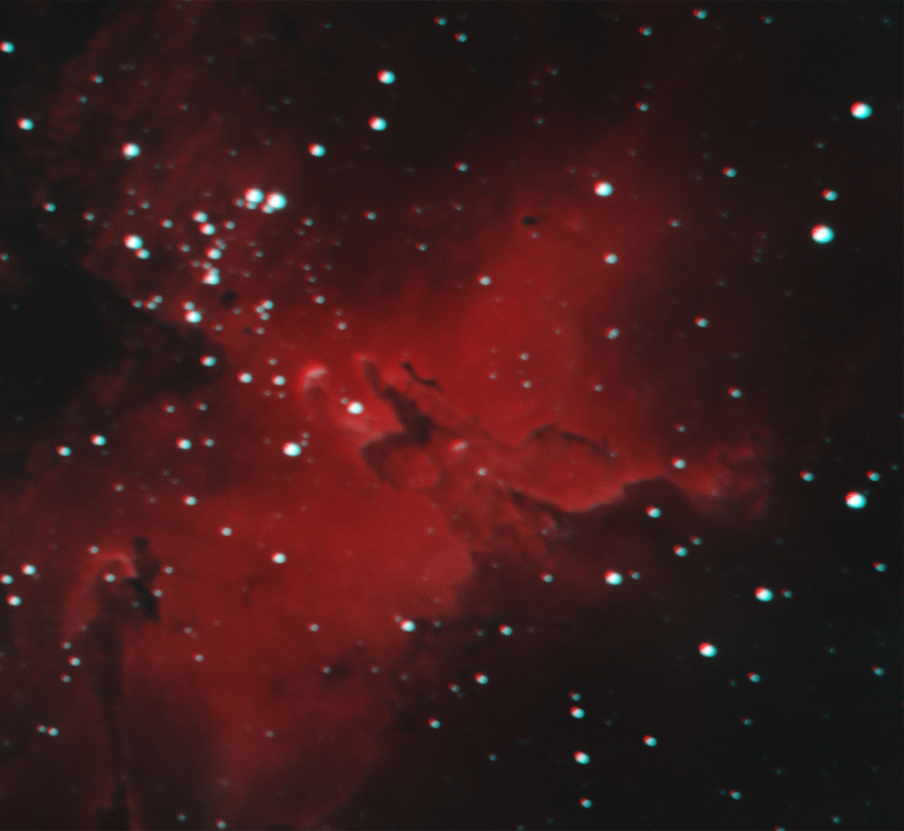
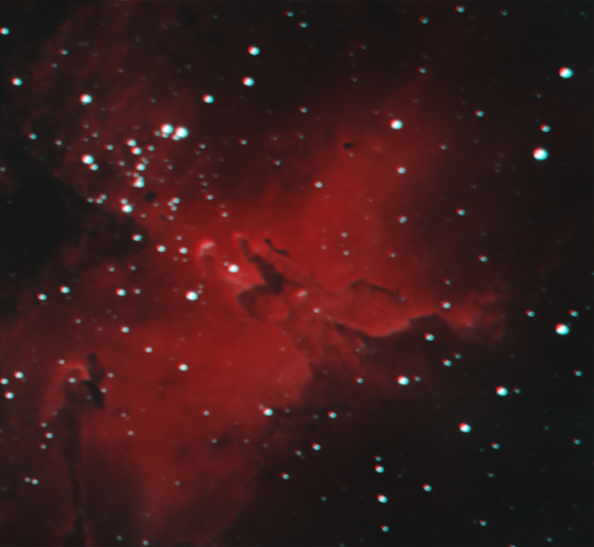

Teaching Stats:
A Basic Introduction to Stats Concepts
A Bookdown that covers some introductory data science. Concepts from teaching data science to undergrads at Harvard
GIS Stats Methods:
Estimating Displacement Caused by War in Tigray
Developing methods to use satellite imagery to model the displacement of people in Tigray during their civil war caused by conflict.
Using Satellites to Estimate Population
Creating models to use NASA's VIIRS satellite data to estimate populations of 10km x 10km grid cells in countries
Using Survival Models to Estimate Coup Probabilities
Using Survival Models to estimate the probability of coups in countries.
Machine Learning Examples:
Stock Price Prediction with Transformers
An experiment using Transformer models to predict stock prices
Transformer Model Portfolio
This tutorial guides students through the use of transformer-based models for Natural Language Processing tasks such as detecting hate speech, diagnosing autism, converting text to images and vice versa, and speech processing. It also includes visualizing attention masks to understand model reasoning and explores Mamba, a potential successor to transformers.


 
